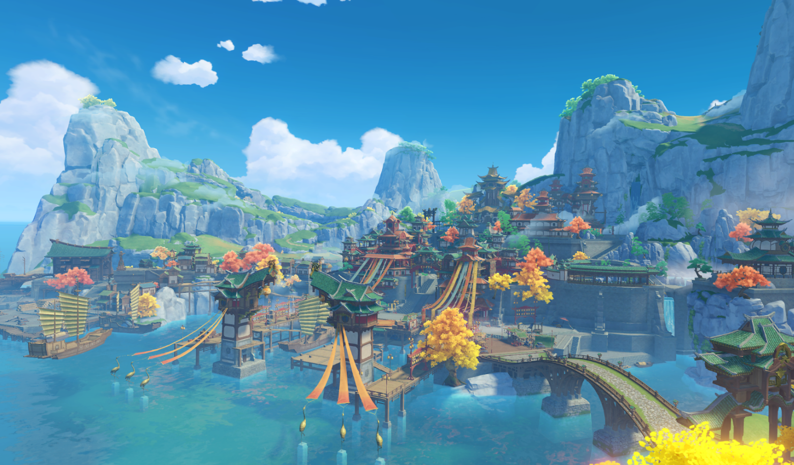
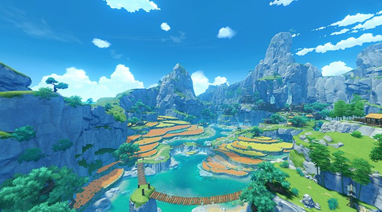
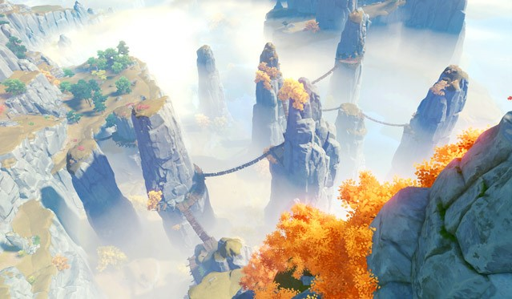

Harbor:
The establishment of the harbor kicked off Liyue's seafaring trade. As Teyvat's largest market harbor, the sheer
amount of goods that flow to and from it is simply incomparable for other ports.
Every year during the Lantern Rite you can see thousands of lanterns ascend into the night sky — a Liyue event
that you can't afford to miss.

Mt. Tianheng:
The pride of the mountain range that shelters Liyue Harbor from the west, acting as a natural shield against any
enemies that may come that way.
There are uncountable records of wars both big and small whereby enemies have been blocked by this barrier. As
such you can still see ancient ruins of city walls, forts, and defensive structures.
Liyue's earliest mining operations are also believed to have started in this area.

Dihua Marsh:
Dihua Marsh, a wetland area north of Liyue, gets its name from the silvergrass ("dihua" in the local language)
that grows in the shallows of the marsh.
The scrambling web of rivers has grown into a flourishing and wide-spread ecosystem full of flora and fauna — an
awe-inspiring sight for travelers to the area.
The area also acts as the road from Mondstadt to Liyue, and as such many merchant caravans choose to stop here
to rest. Wangshu Inn stands within the area, a symbolic structure from all directions.

Wangshu Inn:
A landmark within Dihua Marsh, built upon a massive stone pillar.
As most of the patrons that stop here are traveling merchants, the
inn provides an area for them to trade and set up stalls. The view
from the top of the inn is jaw-dropping — weather permitting you
can see all the way to Mt. Qingce and Jueyun Karst in the distance.
Legend amongst the stalls says that the tower of the inn hides a
mysterious secret, but that's as far as the legend goes, as no-one
has ever been able to validify the claims.

Qingce Village:
At the northernmost point of Liyue, hidden between the hills and the bamboo forests sits Qingce Village.
White rolling clouds that sit in the valleys between the mountains are embellished with row upon row of
crescent-moon water paddies.
When the wind blows, the ripples in the water give off an array of colors.

Jueyun Karst:
Dizzying peaks that sit shrouded in mist and clouds in the northwest of Liyue.
The area hides many stunning views, but owing to tracks found on the complex paths leading up the peaks, a
legend has formed that the hidden home of the Adepti lies somewhere in the area. Though another factor may
simply be the hopes of those that seek blessings from the Adepti.
Given the dangers within, the area is not suitable for outsiders. Best viewed from afar at Wangshu Inn.